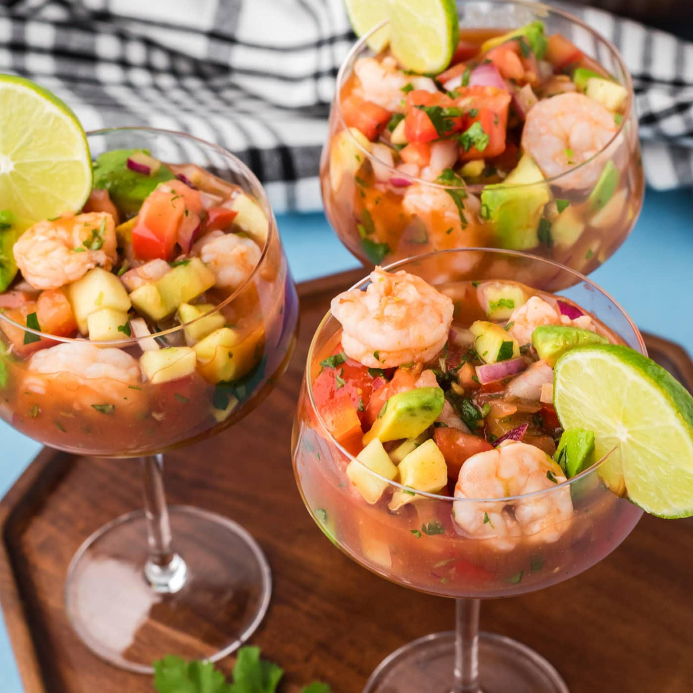

Prawn cocktail, also known as shrimp cocktail, is a seafood dish consisting of shelled, cooked prawns in a Marie Rose sauce or cocktail sauce, served in a glass. It was the most popular hors d'œuvre in Great Britain, as well as in the United States, from the 1960s to the late 1980s. According to the English food writer Nigel Slater, the prawn cocktail "has spent most of (its life) see-sawing from the height of fashion to the laughably passé" and is now often served with a degree of irony.

Ingredients
2 pounds cooked shrimp, peeled and deveined.
½ cup finely chopped red onion.
¼ cup fresh cilantro, chopped.
1 tablespoon crushed garlic.
1 ½ cups tomato and clam juice cocktail.
¼ cup ketchup.
¼ cup fresh lime juice.
¼ cup prepared horseradish.
1 teaspoon hot pepper sauce, or to taste.
Salt to taste.
1 ripe avocado - peeled, pitted and chopped.
Steps
Gather all ingredients.
Place shrimp in a large bowl. Stir in red onion, cilantro, and garlic.
Add tomato and clam juice, ketchup, lime juice, horseradish, and hot pepper sauce; mix well to combine. Season with salt.
Gently stir in avocado. Cover, and refrigerate for 2 to 3 hours.
Serve in cups.
References
Follow Us!
Both the recipes and the images were taken from the following links: